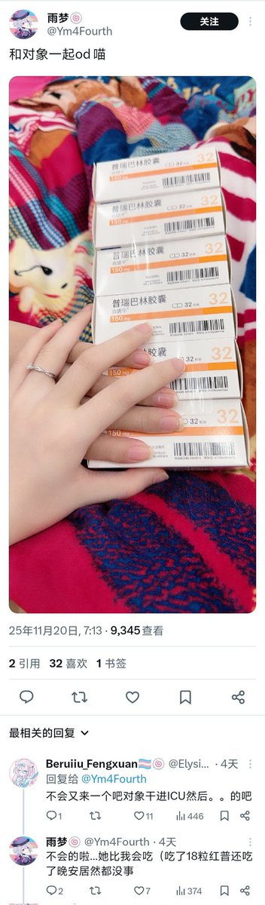

虚拟砂糖猫₍˄·͈༝·͈˄*₎◞ ̑̑🍥
@DianJ71828
@notThujaS 别管那些有的没的，这是自己净化基因呢，这是好事啊

传奇出生鸟鲁鲁（浮木克星）
@notThujaS
先是晚春拾和猫宁，后是N55和传奇顺女，紧接着又来了一对，呵呵
有很多人骂我没同理心。但是od的一对一对的死，那些B我的却只会在底下假惺惺写一句“注意安全”。
“安全”吗？你只是不愿面对，只是想用安全和治抑郁症来骗自己去满足自己越来越高的阈值。
吃吧。我终于知道为什么其他乐子人怂恿别人od了 https://t.co/AqXAiHKjOI